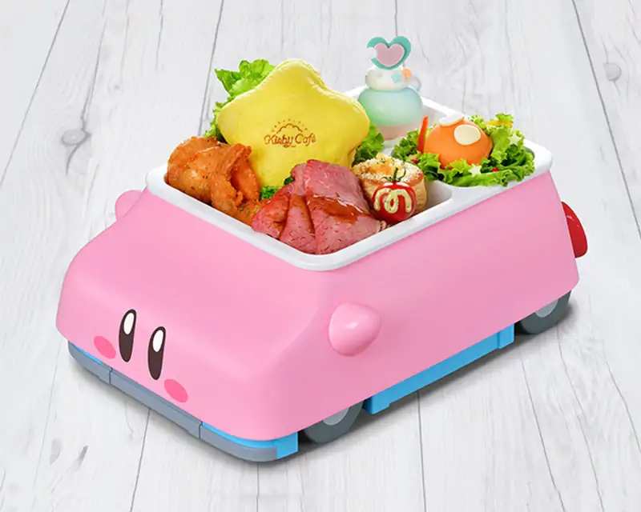
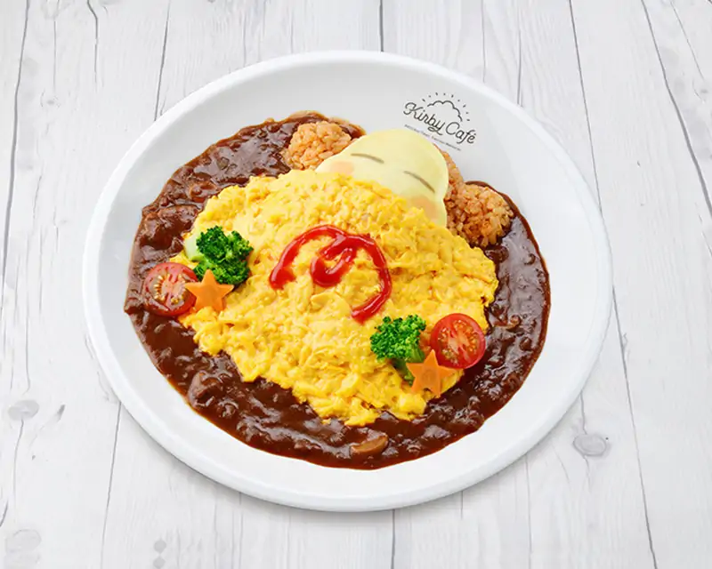

FOODS

The Great Car-Filled Gourmet Adventure Plate!
Kirby's car-munching has become a gourmet one-plate menu! A sandwich shaped like a Warp Star, with roast beef and garlic
shrimp. With Waddle Dee and Elfilin on board, he's ready for a big adventure! Fill up your stomach and race through the
New World!

Waddle Dee's Nap Omelette Rice
This omelet rice features a Waddle Dee napping peacefully on a bed of runny eggs and plenty of homemade sauce. Please
eat it gently so as to not wake him up!